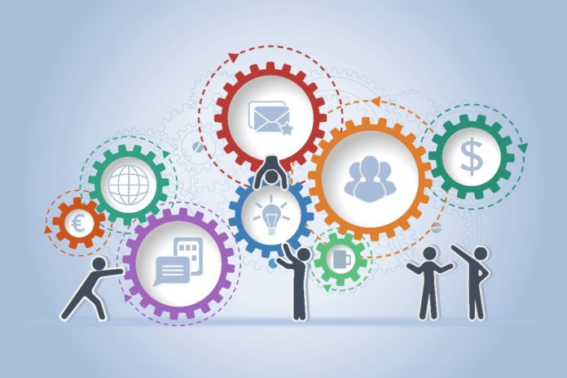
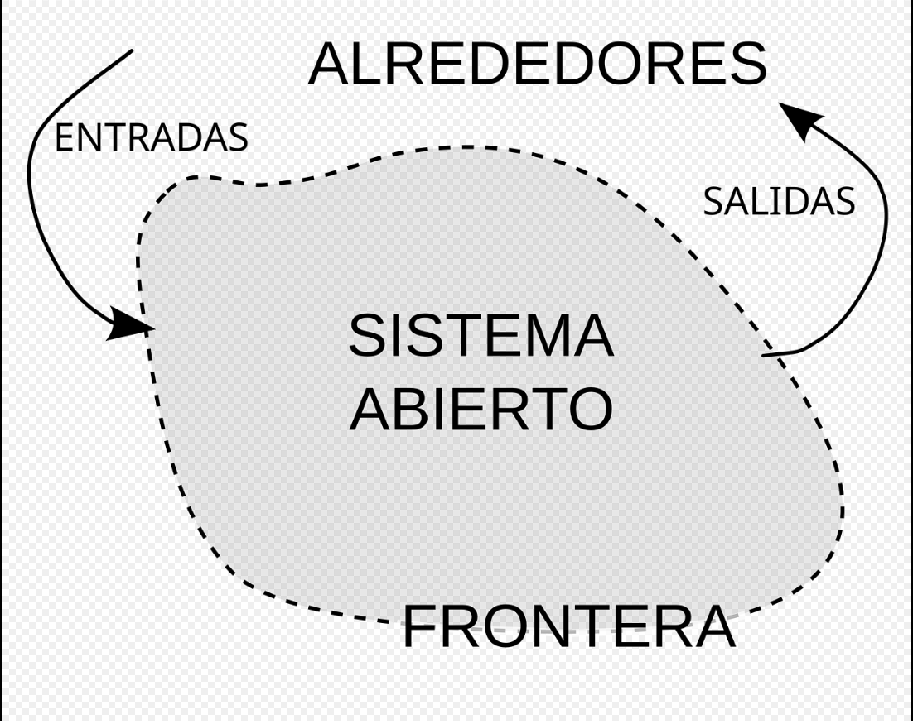
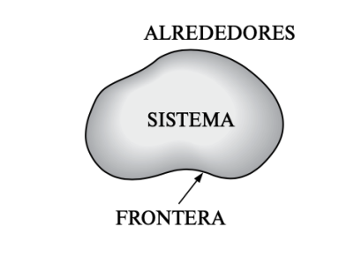
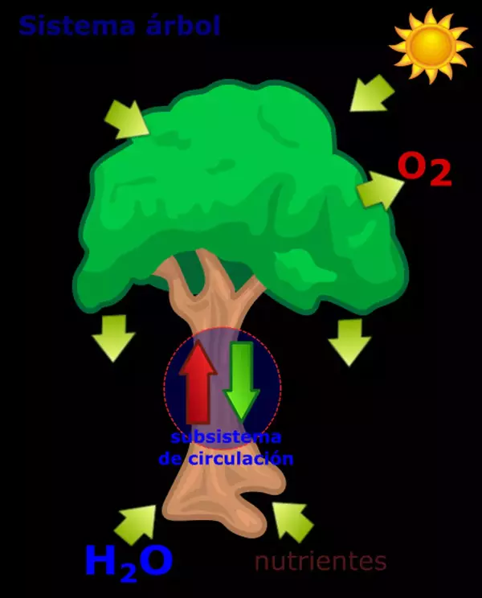
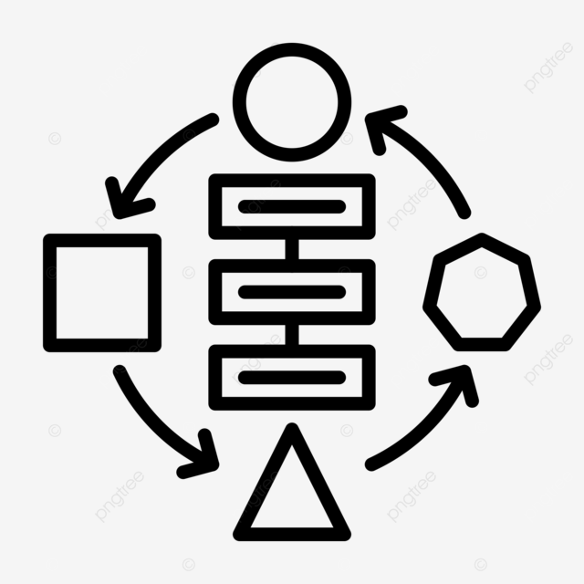
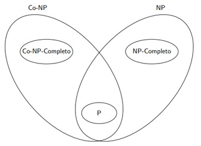
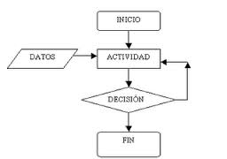
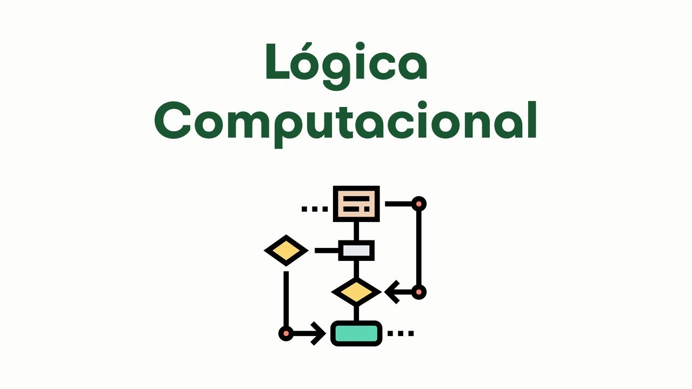
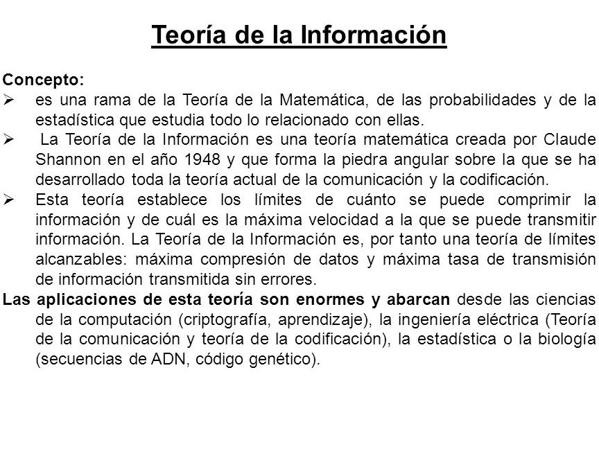
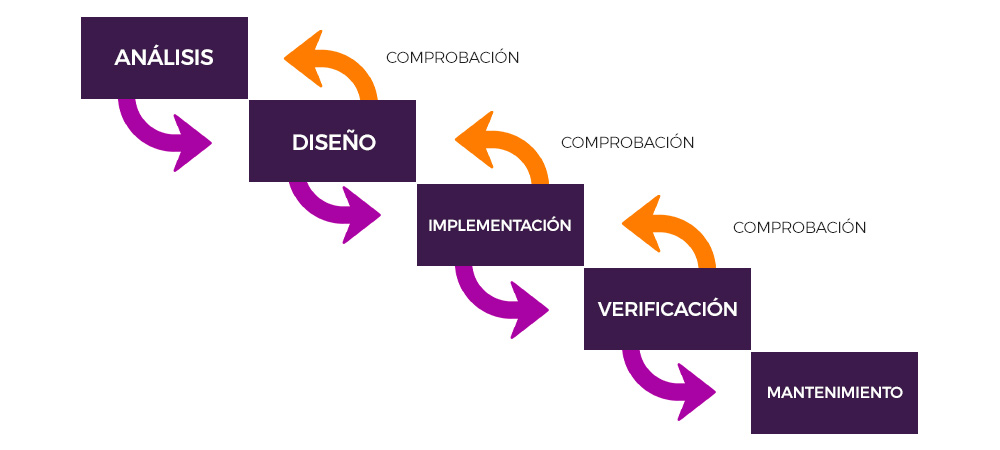

Introduccion a la Ingenieria

Contenido temático que encontraras en esta Humilde pagina:
-
- introducción a la ingeniería de software y conceptos
- Definición de sistema
- Tipos sistemas
- Características de los sistemas
- Dato e información
- Sistemas de Información
- Componentes de un sistema de información
- Software
- Computación
- Teorías de las ciencias de la computación
- Evolución del software
- Evolución del software
- Roles para el desarrollo del software
-
- Redes y Telecomunicaciones
- Conceptos básicos red, internet
- Tipos de red
- Componentes de una red
- Topologías de las redes
- Servicios de Internet
Definición
Es la disciplina que se encarga de aplicar los conocimientos científicos y tecnológicos para resolver problemas y crear soluciones innovadoras que satisfacen las necesidades
Concepto
La ingeniería es una profesión que combina la teoría con la práctica, la innovación con la experiencia, y la responsabilidad con la ética.
Definición de Sistema
Es un conjunto de elementos interconectados que funcionan juntos para lograr un objetivo común.

Tipos de Sistemas:
Sistema Abierto
Intercambia información y energía con el entorno externo

Sistema Cerrado
No interactúa con el entorno externo

Sistema Natural
Ocurre de forma natural, como el clima y ecosistemas

Sistema Artificial
Creados por humanos como software o un vehículo

Caracteristicas de los Sistemas:
- UNIDAD: indivisible que contribuye al funcionamiento.
- RELACION: conexión y dependencia entre los componentes.
- OBJETIVOS: propósito final que el sistema debe alcanzar.
- ENTORNO: contexto externo que influye en el sistema.
Dato
Hecho o valor bruto sin contexto ni significado
Informacion
Conjunto de datos organizados que proporcionan significado y contexto
Sistemas De Información
Conjuntos de componentes interrelacionados que recopilan procesos, almacenan y distribuyen información con el objetivo de apoyar la toma de decisiones la gestión y la eficiencia
Ejm: sistemas de gestión de clientes, inventario y sistemas financieros

Componentes de un sistema de información
Hardware:
dispositivos físicos del sistema, como computadores y servidores
Software:
programas que controlan, el hardware y realizan tareas especificas

Datos:
información bruta que se procesa y almacena
Personas:
usuarios que interactúan con el sistema
Procedimiento:
conjunto de instrucciones y reglas que guían el uso del sistema

Software y computación
Software:
conjunto de instrucciones que le dicen al hardware que hacer
Computación:
proceso de usar computadores para resolver problemas y realizar tareas
Teorías de las ciencias de la computación
Las teorías de las ciencias de la computación son fundamentales para entender
los principios que origen el procesamiento de la información y el diseño de sistemas
computacionales. aquí te presento un resumen de las principales teorías
1. Teoría de la Computación

- Estudia qué problemas pueden ser resueltos por una computadora y cuán eficientemente
- Máquinas de Turing: Modelo matemático que define lo que una computadora puede o no puede hacer.
- Lenguajes Formales y Autómatas: Analiza cómo se estructuran los lenguajes de programación y cómo las máquinas pueden reconocerlos.
- Problemas Divisibles e Indecidibles: Distingue entre problemas que tienen solución algorítmica y los que no.
2. Teoría de la Complejidad Computacional

- Clasifica los problemas según los recursos (tiempo y espacio) necesarios para resolverlos.
- Clases de Complejidad (P, NP, NP-completo): P son problemas que se resuelven rápido; NP son los que se verifican rápido; NP-completos son los más difíciles dentro de NP
- Reducción de Problemas: Técnica para demostrar la dificultad relativa entre problemas.
|
3. Teoría de Algoritmos

- Se enfoca en diseñar y analizar algoritmos eficientes.
- Análisis de algoritmos (Big O): Mide el rendimiento en términos de tiempo y espacio.
- Algoritmos de búsqueda, ordenamiento, grafos, etc.
4. Lógica Computacional

- Es la base para razonar sobre programas y sistemas.
- Lógica Proposicional y de Primer Orden: Lenguajes para expresar afirmaciones lógicas.
- Verificación Formal: Prueba matemática de la corrección de programas.
5. Teoría de la Información

- Cuantifica la información y estudia la transmisión y compresión de datos.
- Entropía (Shannon): Medida de incertidumbre o contenido informativo.
- Codificación y compresión de datos.
6. Teoría de Bases de Datos
- Estudia cómo almacenar, organizar y acceder a datos eficientemente.
- Modelo Relacional: Usa tablas para representar datos y relaciones.
- Lógica de consulta (SQL, Álgebra Relacional).
7. Teoría de Tipos
- Fundamento para muchos lenguajes de programación modernos.
- Tipos de datos estáticos y dinámicos: Aseguran que el programa maneje correctamente los datos.
Evolución del software
La evolución del software es el proceso mediante el cual los programas informáticos se desarrollan, mejoran y se adaptan a lo largo del tiempo para seguir
siendo útiles, eficientes y relevantes
1. Etapas Históricas de la Evolución del Software

- Década de 1940-50: Software artesanal
- Programación directa en lenguaje máquina o ensamblador.
- El software era creado específicamente para una máquina.
- No existía como industria independiente.
- Década de 1960: Crisis del software
- Aumenta la complejidad del software y aparecen muchos errores y retrasos.
- Se reconoce la ingeniería del software como disciplina formal.
- Surgen los primeros lenguajes de alto nivel (FORTRAN, COBOL).
- Década de 1970-80: Metodologías estructuradas.
- Aparecen métodos para diseñar software de forma más ordenada.
- Se populariza la programación estructurada (Evita el uso del GOTO).
- Desarrollo del software comercial.
- Década de 1990: Orientación a objetos.
- Se generaliza el uso de lenguajes como Java y C++.
- El software se organiza en "objetos" con datos y comportamiento.
- Enfoque modular y reutilizable.
- Década de 2000: Web y software como servicio (SaaS).
- El software se entrega a través de internet.
- Crecimiento de aplicaciones web, móviles y en la nube.
- Comienza el enfoque ágil en el desarrollo.
- Década de 2010 en adelante: Automatización e inteligencia.
- Integración con inteligencia artificial, aprendizaje automático y big data.
- Desarrollo DevOps (desarrollo + operaciones) para automatizar pruebas, integración y despliegue continuo.
- Uso de contenedores y microservicios.
🔧 2. Modelos de Evolución del Software
Uno de los más conocidos es el de Lehman y Belady, que establece leyes como:
- El software debe cambiar o morirá (ley de cambio continuo).
- El crecimiento del software lleva a una mayor complejidad.
- El mantenimiento representa la mayor parte del ciclo de vida.
🔁 3. Tipos de Evolución del Software
- Correctiva: Corregir errores.
- Adaptativa: Adaptar el software a nuevos entornos.
- Perfectiva: Mejorar funciones existentes.
- Preventiva: Reestructuración para facilitar mantenimiento futuro.
🧰 4. Herramientas modernas de evolución
- Sistemas de control de versiones (como Git).
- Integración continua (CI/CD).
- Pruebas automatizadas.
- Monitoreo y análisis de rendimiento.
Paso para el desarrollo de software

El desarrollo de software sigue un conjunto de pasos organizados que permiten crear sistemas funcionales, mantenibles y adaptados a las necesidades del usuario.
Este proceso se conoce comúnmente como ciclo de vida del desarrollo de software (SDLC, por sus siglas en inglés). A continuación, te presento los pasos clave
1. Recolección de Requisitos
- Se identifican las necesidades del cliente o usuario.
- Se definen las funcionalidades y restricciones del sistema.
- Se crean documentos de especificación.
2. Análisis
- Se analiza la viabilidad técnica, económica y operativa del proyecto.
- Se detalla cómo funcionará el software.
- Se crean modelos funcionales (casos de uso, diagramas de flujo).
3. Diseño del Sistema
- Se define la arquitectura del software.
- Se diseñan interfaces, bases de datos y componentes.
- Se elige la tecnología y estructura del proyecto.
- Tipos de diseño: diseño de interfaz, diseño de datos, diseño lógico y físico.
4. Implementación o Codificación
- Se escribe el código fuente en el lenguaje de programación elegido.
- Los desarrolladores construyen los módulos definidos en el diseño.
- Se siguen estándares de codificación y buenas prácticas.
5. Pruebas
- Se prueban los módulos y el sistema completo.
- Tipos de prueba: unitaria, integración, sistema, aceptación del usuario.
- Se corrigen errores y se optimiza el rendimiento.
6. Despliegue
- Se instala el software en el entorno real (producción).
- Puede hacerse de forma manual o automatizada (DevOps).
- Se capacita a los usuarios y se entrega la documentación.
7. Mantenimiento
- Se realizan ajustes, correcciones y mejoras tras la entrega.
- Tipos de mantenimiento: correctivo, adaptativo, perfectivo, preventivo.
- Asegura que el software siga siendo útil a lo largo del tiempo.
Roles para el desarrollo del software
- Desarrollador: programación y la implementación del software
- Analista de requisitos: recolecta y documenta los requisitos del cliente para definir los objetivos del software
- Diseñador ux/ui: crea la experiencia y diseño visual del software mejorar la usabilidad
- Tester: realiza pruebas para garantizar la calidad y el correcto funcionamiento del software
- Scrum master / Project manager
- Coordina el equipo y gestiona el proyecto utilizando metodologías agiles
- Producto owner: define la visión del producto y prioriza los requisitos según el valor para el usuario
- Devops: gestiona la infraestructura y automatización del despliegue del software
redes y telecomunicaciones
Las redes y telecomunicaciones son fundamentales en la comunicación digital moderna.
Permiten la conexión entre dispositivos
para compartir datos y recursos, lo que facilita la
interacción entre personas y sistemas en todo el mundo.
1. Conceptos Básicos de Red e Internet
Red de Computadoras
Una red de computadoras es un conjunto de dispositivos interconectados que comparten
información y recursos (como archivos, impresoras y conexión a Internet).
Internet
Internet es una red de redes a nivel mundial que permite la comunicación y el intercambio
de datos a través de protocolos estándar como TCP/IP.
Protocolos de Comunicación
Los protocolos son reglas que definen cómo se transmiten los datos en una red. Algunos de
los más importantes son:
• TCP/IP: Protocolo principal de Internet, compuesto por el Protocolo de Control de
- Transmisión (TCP) y el Protocolo de Internet (IP).
- HTTP/HTTPS: Protocolos para la comunicación en la web.
- FTP (File Transfer Protocol): Para la transferencia de archivos.
- DNS (Domain Name System): Traduce nombres de dominio en direcciones IP.
- DHCP (Dynamic Host Configuration Protocol): Asigna direcciones IP dinámicas a los
dispositivos en una red.
2. Tipos de Red
Las redes pueden clasificarse según su tamaño, alcance y propósito:
• PAN
(Personal Area Network): Redes de corto alcance, como Bluetooth y dispositivos
móviles.
• LAN
(Local Area Network): Redes de área local, utilizadas en hogares y oficinas.
• MAN
(Metropolitan Area Network): Redes que cubren ciudades o grandes áreas
urbanas.
• WAN
(Wide Area Network): Redes que conectan regiones geográficas extensas,
como Internet.
• WLAN
(Wireless Local Area Network): Versión inalámbrica de una LAN (ej. Wi-Fi).
• VPN
(Virtual Private Network): Red privada virtual que permite acceso seguro a redes
Remotas
3. Componentes de una Red
Para que una red funcione, necesita varios componentes:
Dispositivos de Red
- Router: Dirige el tráfico entre redes y permite la conexión a Internet.
- Switch: Dispositivo que conecta múltiples dispositivos dentro de una LAN.
- Modem: Convierte señales digitales en analógicas y viceversa para el acceso a
Internet.
- Access Point (Punto de Acceso): Permite la conexión inalámbrica en una red Wi-Fi.
- Servidor: Computadora que proporciona servicios y almacenamiento a otros
dispositivos.
- Cliente: Dispositivos (PC, móviles, tablets) que acceden a la red.
Medios de Transmisión
- Cableado de cobre (Ethernet, UTP, STP)
- Fibra óptica
- Conexión inalámbrica (Wi-Fi, Bluetooth, Satélite, Radiofrecuencia)
Topologías de Redes
La topología se refiere a la forma en que los dispositivos están organizados en una red.
Tipos de topologías
1. Topología en Bus
- Un único cable conecta todos los dispositivos.
- Bajo costo, pero difícil de expandir.
2. Topología en Estrella
- Todos los dispositivos están conectados a un nodo central (switch o router).
- Alta fiabilidad, pero depende del nodo central.
3. Topología en Anillo
- Los dispositivos están conectados en círculo.
- Menos común en redes modernas.
4. Topología en Malla
- Cada dispositivo está conectado a varios otros.
- Alta redundancia, pero costosa.
5. Topología Híbrida
• Combinación de varias topologías anteriores.
Servicios de Internet
Internet proporciona diversos servicios que permiten la comunicación y el acceso a
información.
Principales servicios:
- WWW (World Wide Web): Páginas web accesibles a través de navegadores.
- Correo Electrónico (Email): Comunicación asincrónica mediante servidores de correo.
- VoIP (Voz sobre IP): Llamadas a través de Internet (Ej. Skype, Zoom).
- Servicios de Almacenamiento en la Nube: Google Drive, Dropbox, OneDrive.
- Redes Sociales: Facebook, Twitter, Instagram.
- Streaming de Video y Música: YouTube, Netflix, Spotify.
- Comercio Electrónico: Amazon, eBay, Mercado Libre.
- Servicios de Mensajería Instantánea: WhatsApp, Telegram.